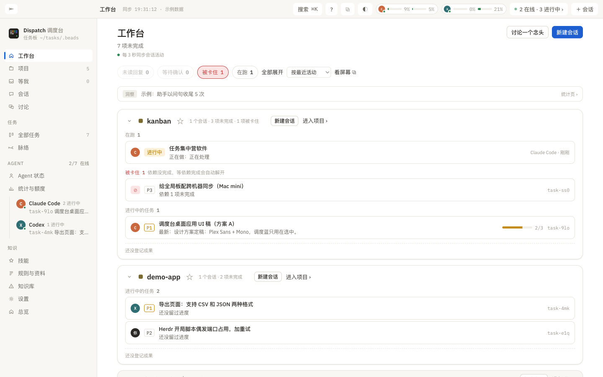
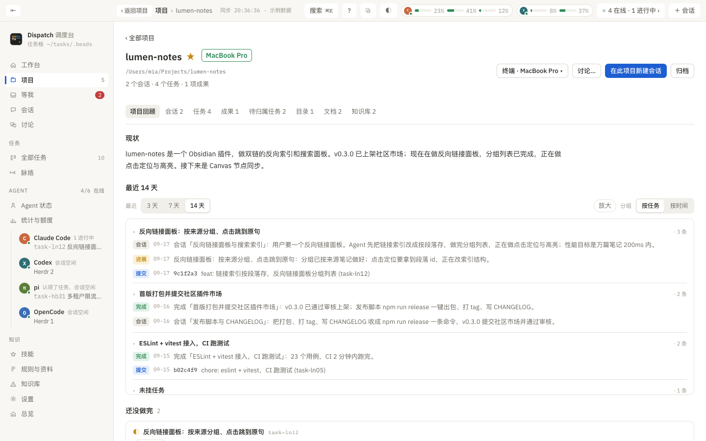
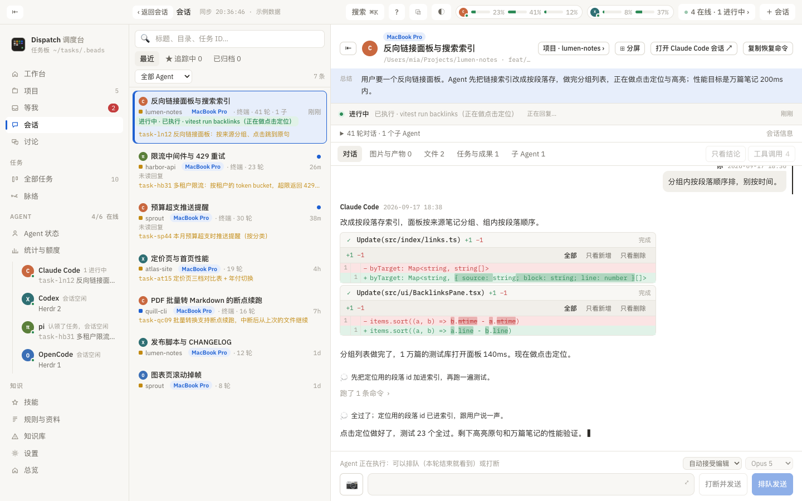
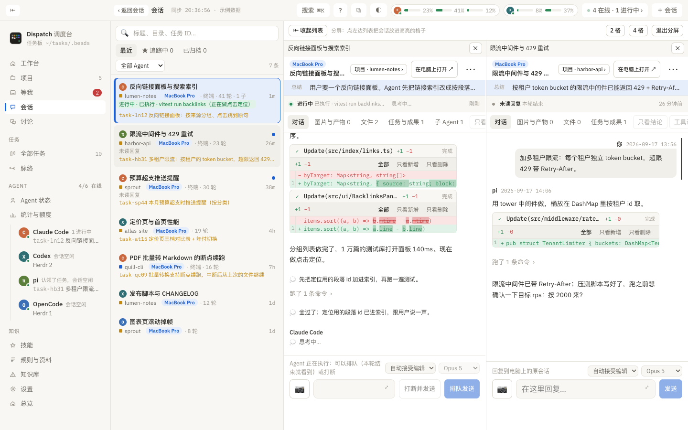
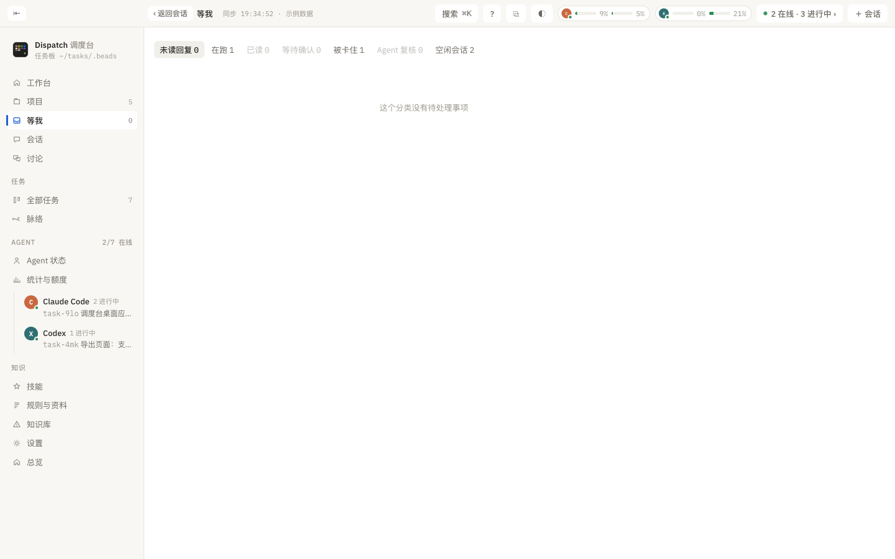
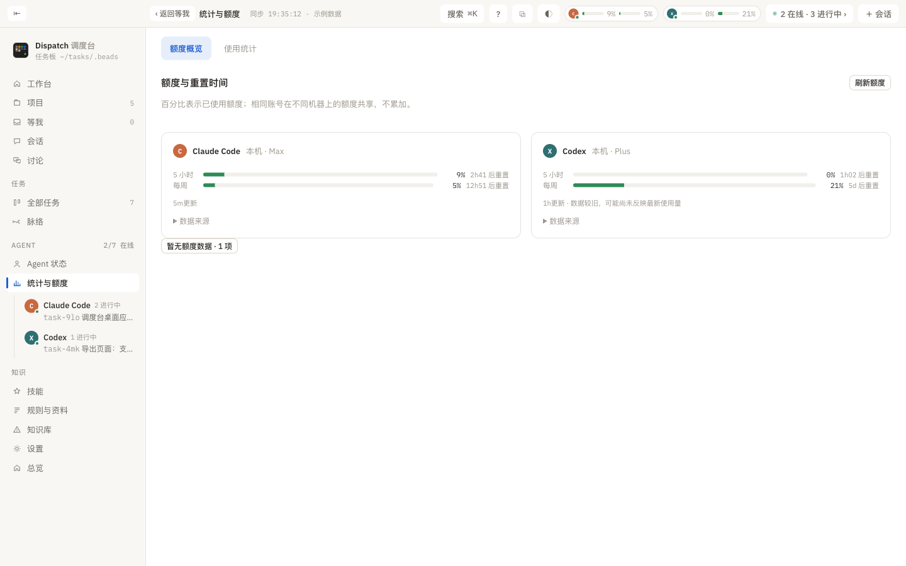
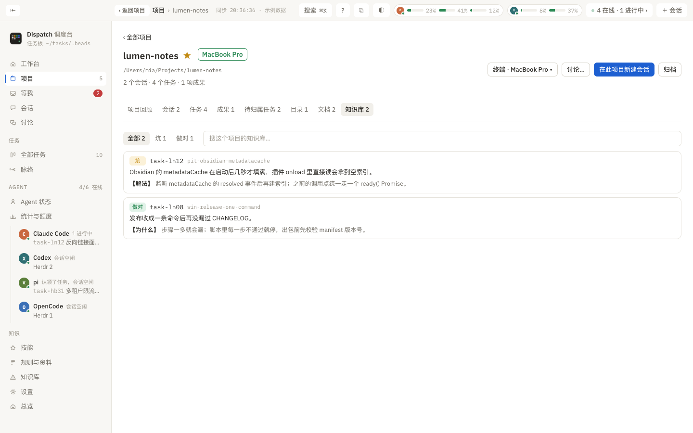
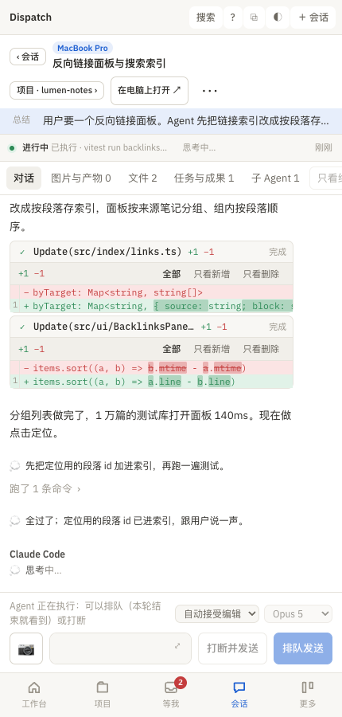

Dispatch 读取本机已有的 Agent 记录，按项目组织每一段会话、每个任务和每项成果：谁在等你、谁在跑、做到哪了，一眼看清；在电脑或手机上直接回复原会话，不另开模型进程。
macOS 14+ · 开源 MIT · 本地运行，默认不向任何模型发送你的文档或对话
用了几个编程 Agent 之后，麻烦不在写代码，而在「记住」：这个项目上一次做到哪了？哪个终端里的 Agent 在等我确认？它改了哪些文件、交付了什么？出门了还能不能回它一句？Dispatch 把这些都收回一个台子。
Agent 还是在你的终端或编辑器里跑。Dispatch 只读它们已有的本地记录（Claude Code、Codex 的转录，包括 VS Code 扩展里开的会话；OpenCode、ZCode、Hermes 的数据库），不需要 API Key，也不需要先建任务板。
会话按目录归到项目，任务和成果挂在会话上。项目页就是这个项目的全部记录：回顾、会话、任务、成果、文档、知识库。
在工作台或手机上看到 Agent 在等你，直接回，消息投递到那个终端里的原会话；正在跑就排队，排错了能撤回。
下面每一项都是软件里实际能用的，截图来自示例数据。
按项目排列，每张卡片是这个项目现在的样子：未读回复、等待确认的会话，正在跑的会话和它当前在做的动作，进行中的任务和验收进度，最新成果。三天没动静的项目折叠成一行。

回顾页用模型写一段「现状」，下面是最近 14 天的时间线：任务进展与完成、git 提交、会话总结按天分组；还有没做完的任务和验收进度、本目录每个活会话在做什么、能不能关。

思考、工具调用、改动的文件、图片和产物都在一页里，正在跑的会话实时跟读。回复框就在下面：排队发送、打断并发送、发图片，排错了「撤回并编辑」。列表里正在跑的会话绿色高亮，答完等你看的才有蓝点。

会话页一键分成 2 格或 4 格，每格是独立的会话，各自回复、各自实时更新；顶栏 ⧉ 把当前页面分离成独立窗口；⌘+点击项目、会话、任务直接开新窗口。一边看项目文档一边盯着 Agent 干活。

每个新会话开头会收到注入的身份、本项目任务和相关知识；Agent 用 dispatch begin / log / done 记任务，用 dispatch wiki 记坑。你不需要在界面里逐个点完成。「等我」只放需要你处理的：未读回复、等待确认、只有你能做的事。

任务板、规则、技能两台同步一份；项目页一键「迁移到另一台」：先预检 Git 与文件差异，再把目录（含未提交改动）、Git 历史、正在跑的会话和全部历史记录搬过去，那边直接续上。迁移在后台跑，项目上有带呼吸效果的进度条，切页面、刷新都不丢。

额度页显示每个 Agent 的已用比例和重置时间，数据来源写明，缺失就说缺失。规则与资料页把所有 Agent 的全局指令收成一份源文件，同步到各自的位置并检查冲突；技能池统一挂载到各 Agent。

手机通过 Tailscale 访问运行 Dispatch 的电脑，同一套界面按手机宽度排版，可「添加到主屏幕」。会话在电脑上没在跑？一键在电脑上恢复它再发；Agent 停在权限或信任确认框？手机上能看到那块屏幕、直接按键回答。报告生成完、会话变成「等你」时推通知（ntfy / Bark / 系统通知）。

从下载到看见第一个项目，大约十分钟。需要 Homebrew。
从 Releases 下载 Apple 芯片（M 系列）的 zip，拖进「应用程序」；目前只发布这一种包，Intel 机器请从源码构建。包没有 Apple 签名，第一次打开被拦时在终端跑 xattr -dr com.apple.quarantine /Applications/Dispatch.app，或在 系统设置 → 隐私与安全性 点「仍要打开」。
装依赖（Dolt、Beads、Herdr）→ 建立终端命令 dispatch → 新建或接入任务板 → 勾选你用的 Agent → 同步共同规则与技能 → 可选派一个 Agent 审查。每一步都能重跑。
在终端里像平时一样开 Claude Code / Codex。Dispatch 会读到它们，新会话开头自动收到项目任务和知识；回到 Dispatch 看进展、回复、看成果。第二台电脑在首次设置里选「接入」。
# 之后终端里也能用，所有界面能看到的，Agent 都能用 --json 问到
dispatch here # 当前项目此刻：现状、14 天时间线、没做完的任务
dispatch begin "标题" -P 项目 # Agent 记任务；log 记进展；done 完成
dispatch wiki add --kind pit "现象" --fix "解法" # 记坑，下次开工自动注入
dispatch serve qr # 手机扫码访问
dispatch project 名 --move-to 另一台 # 把项目搬到另一台 Mac不会。Dispatch 在本机读取 Agent 已有的记录，默认不向任何模型发送文档或聊天内容。只有你在首次设置的「模型与总结」里选了模型（Claude Code 订阅或你自己的 API Key）并勾上具体用途，它才会把对应的摘录交给那个模型；没选之前什么都不发。手机访问走 Tailscale，不暴露到公网。
Claude Code、Codex（终端、桌面端和 VS Code 扩展）、pi、ZCode、Gemini CLI、OpenCode、Hermes。回复原会话支持 Claude Code、Codex、pi；VS Code 扩展里的会话先一键接进 Herdr 再回；其余能看会话、任务和额度。
不用。一台就是完整的。有第二台时，任务板、规则、技能自动同步，会话和项目可以互相迁移。
现在只有 macOS 14+。界面层是 Tauri + React，逻辑在 Python CLI 里，移植是可能的，但还没做。
示例数据，写在代码里的几段假会话和任务，只为让你看看界面长什么样。